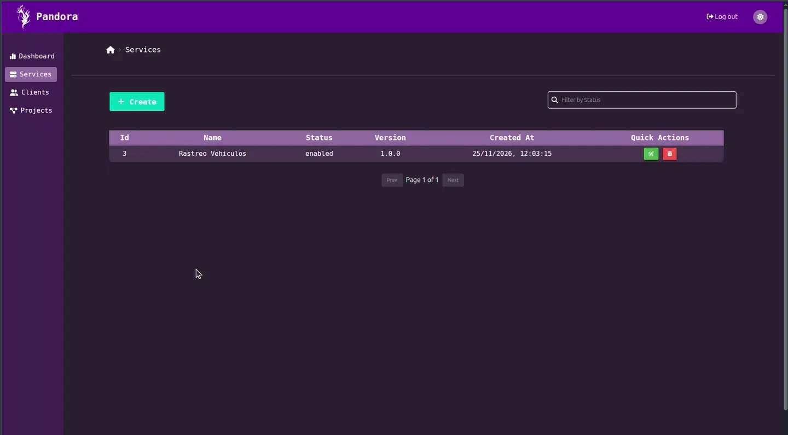

Pandora
Consola para centralizar el gobierno de APIs entre organizaciones.
Mi rolContribuidor y líder de frontend.
El problemaLas organizaciones que consumen varias APIs tenían la información repartida: las keys en un lado, las cuotas en otro, los permisos en otro. No existía un solo lugar donde un administrador pudiera responder «¿qué está pasando con nuestros servicios ahora mismo?».
Qué quedó funcionandoKeys, cuotas, estadísticas, usuarios y permisos en una sola consola. Autenticación con JWT, monitoreo del estado de microservicios en tiempo real, soporte para múltiples entornos (development, staging, production) y modo claro/oscuro con preferencia persistente.
La decisión que me costó pensarTypeScript como lenguaje principal y SPA en lugar de render por servidor. La apuesta: un administrador no entra a leer una página, entra a consultar y modificar muchas veces seguidas. En ese patrón de uso, la latencia entre acciones pesa más que el primer render, y pesa todavía más en conexiones inestables o equipos modestos, que es la realidad de buena parte de los usuarios.
Por qué es públicoEl código está abierto a propósito. Si alguien quiere ver cómo estructuro un proyecto de verdad (carpetas, tipos, estado, pruebas), este es el que hay que abrir.